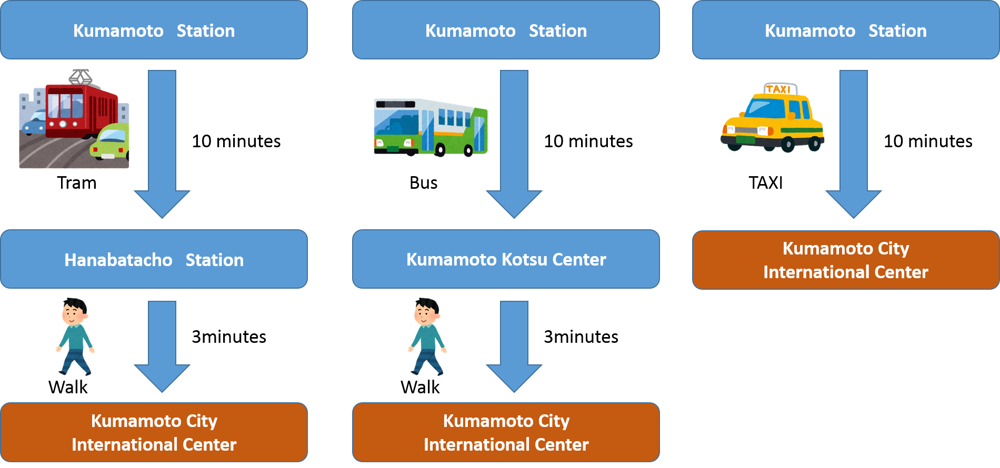

Sixth Plenary Meeting of UN-GGIM-AP
Meeting Place:Kumamoto City International Center[HP]
4-18 Hanabata-cho, Kumamoto-shi 860-0806 Japan
+81-96-359-2020 (international calls from countries outside Japan)
096-359-2020 (calls domestically in Japan)
From Kumamoto JR station
- 10 minutes via Kumamoto City Tram by getting off at the tram stop of "Hanabatacho" and walking 3 minutes from the tram stop
- 10 minutes via buses by getting off at the Kumamoto Kotsu Center and walking 3 minutes from the center
- 10 minutes via taxi

From Aso Kumamoto airport
- 45 minutes via a taxi
- 45 minutes via airport limousine bus by getting off at the Kumamoto Kotsu Center and walking 3 minutes from the center
GSI Maps

Copyright © UN-GGIM-AP
Supported by:Geospatial Information Authority of Japan
GSI International Twitter
GSI International Facebook
This page was last updated 2017-06-28